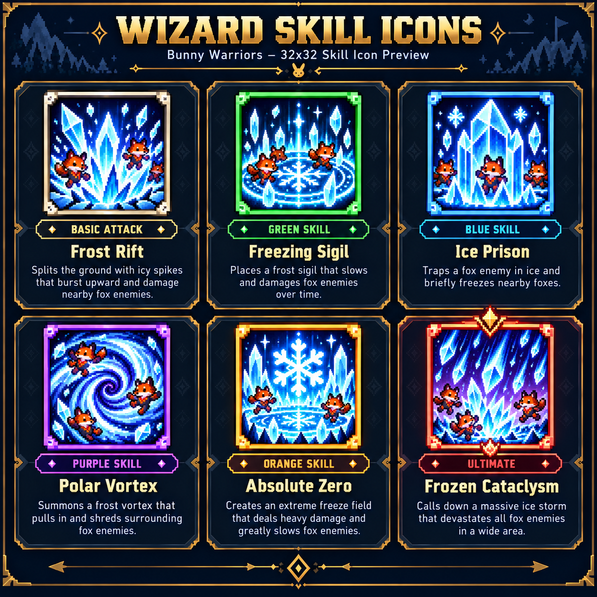
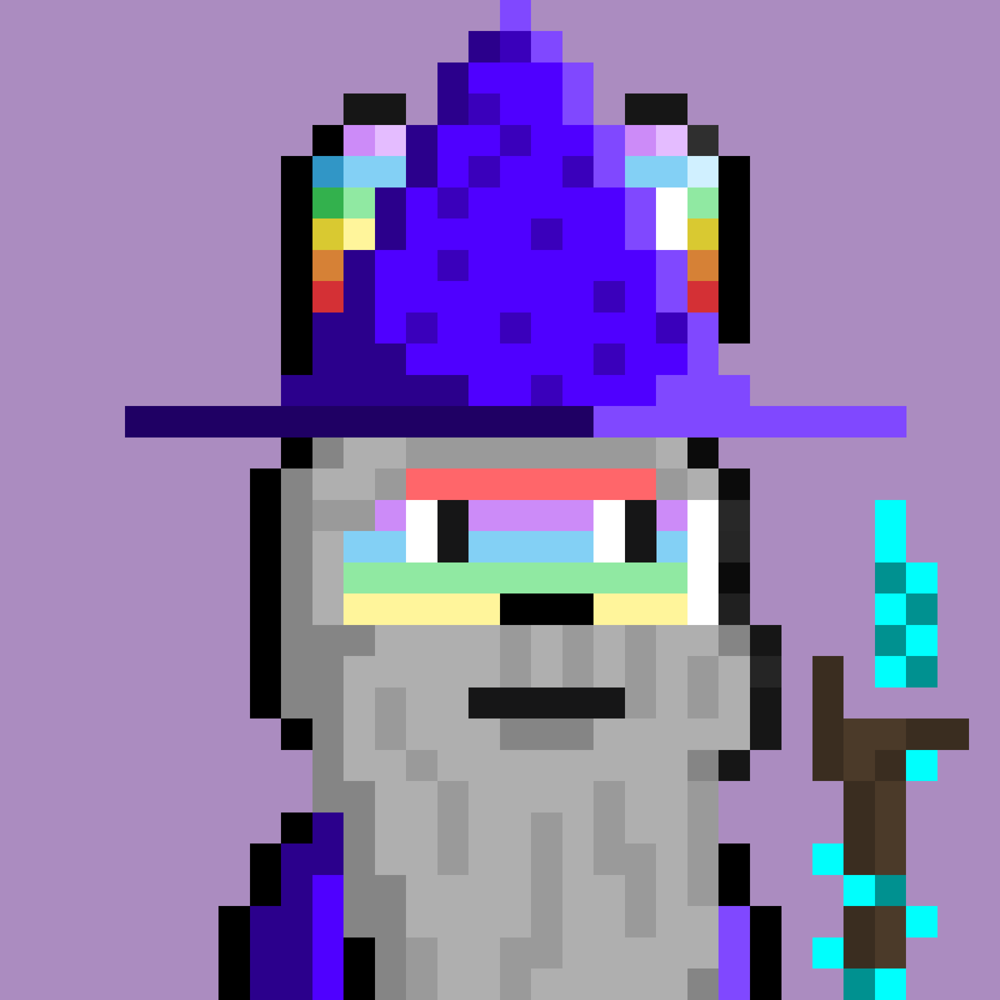

THE BUNNY WARRIORS EXHIBITION · VOL. 01
小小勇者。
無限戰場。
走進 Bunny Warriors 的遊戲世界。探索角色、拆解技能，近距離觀看每一道魔法的誕生。
68技能設計
03武器路線
64²VFX 像素規格
FEATURED HERO / 001

THE FROST WIZARD 冰霜法師
角色概念參考 · 美術開發中CHARACTERS / WEAPONS / MAGIC向下探索 ↓
01 / THE HEROES
每位勇者，都有自己的戰法。
CHOOSE YOUR WEAPON
三種武器，更多可能。
武器技能與角色能力各自獨立；法杖本身不附帶冰凍。
02 / THE SKILL ARCHIVE
找到你的下一張王牌。
以最新整理的技能資料為準
03 / THE VFX LAB
讓魔法，動起來。
效果原型示意，非 Unity 實機錄影；橙色狐狸為簡化標記。
64 × 64 RGBA透明 PNGPoint FilterUnity 匯入指引
查看此技能精靈圖集 ↗